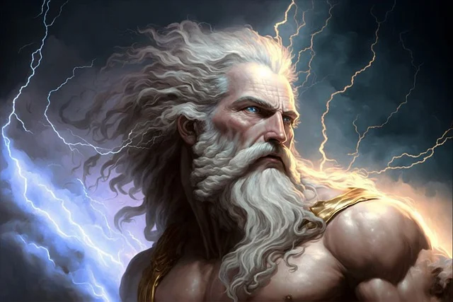
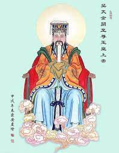
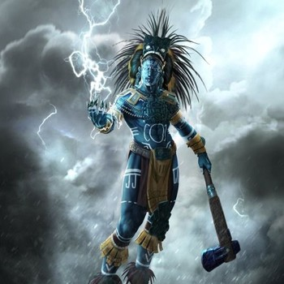
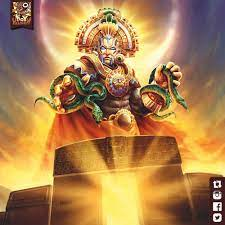

Zeus
En la mitología griega, Zeus es una divinidad a la que se denomina a veces con el título de «padre de los dioses y los hombres», que gobierna a los dioses del Olimpo como un padre a una familia, de forma que incluso los que no eran sus hijos naturales se dirigen a él como tal.2 Es el rey de los dioses y supervisa el universo. Es el dios del cielo y el trueno y por ende de la energía.
Entre sus atributos se incluyen el cetro y la corona (como símbolos de su poder), el rayo, el águila,
el toro y el roble.
Hijo de Cronos y Rea, era el más joven de sus descendientes. En la mayoría de
las tradiciones aparece casado con Hera (su hermana y esposa, que engañó siendo un pájaro para
casarse) aunque en el oráculo de Dódona su esposa era Dione, con quien según la Ilíada es padre de
Afrodita. Es conocido por sus numerosas aventuras y amantes, fruto de las cuales fueron muchas
deidades y héroes, incluyendo Atenea, Apolo, Artemisa, Hermes, Perséfone, Dioniso, Perseo, Heracles,
Helena, Minos, las Musas y ninfas como Eco. Con Hera suele decirse que Zeus fue padre de Ilitía,
Ares, Enio, Hebe y Hefesto.
Odin
Odín (nórdico antiguo Óðinn), también llamado Wotan o Woden, es considerado el Dios principal de la
mitología nórdica, así como de algunas religiones etenas.
Su papel, al igual que el de muchos Dioses nórdicos es complejo. Es el Dios de la sabiduría, la
guerra y la muerte, pero también se le considera, aunque en menor medida, el Dios de la magia, la
poesía, la profecía, la victoria y la caza.
Odín reside en el Asgard en el palacio de Valaskjálf, que construyó para sí y donde se encuentra su
trono, el Hliðskjálf, desde donde podía observar lo que sucedía en cada uno de los nueve mundos.
En la batalla blandía su lanza, llamada Gungnir, y montaba su corcel de ocho patas, llamado
Sleipnir.
Era hijo de Bor y de la gigante Bestla, hermano de Vili y Ve, esposo de Frigg y padre de muchos de
los dioses tales como Thor, Balder, Vidar y Váli. En la poesía escáldica se hace referencia a él
con infinidad de kenningar y uno de los que se utiliza para mencionarlo es Allföðr («padre de
todos»).
Como dios de la guerra, se encargaba de enviar a las valquirias a recoger a los guerreros heroicos
muertos en batalla, los einherjer, que se sientan a su lado en el Valhalla, donde preside los
banquetes. Al final de los tiempos Odín guiará a los dioses y a los hombres contra las fuerzas del
caos en la batalla del fin del mundo, el Ragnarök. Ahí el dios será asesinado y devorado por el
feroz lobo Fenrir, a quien Vidar matará inmediatamente, desgarrará las fauces y colocará un pie en
la garganta.
Indra
En la mitología hinduista, Indra es el rey de los dioses o devas y señor del Cielo y dios principal
de la religión védica (previa al hinduismo) en la India.
Aparece como héroe, deidad y figura central en el libro Rig-veda (mediados del II milenio a. C.).
Dentro de las divinidades hinduistas, es considerado el dios de la guerra, la atmósfera, el cielo
visible, la tormenta y el rayo (que es representado como una espada con ondulaciones (como un
rayo)). Como antigua deidad suprema, sería el creador de la Perlas de Indra en la cosmología hindú.
Posteriormente, en el hinduismo, se convirtió en el rey de todos los semidioses (dioses inferiores) y
fue superado por los dioses Brahmá, Vishnú y Shivá.
Su arma es el relámpago (vashra). Su vajana (vahana: ‘vehículo, montura’) es el elefante Airavata,
que representa la nube de la cual Indra hace descargar su lluvia.
Entre otras cosas es el dios regente de la pupila del ojo derecho (mientras que la del izquierdo es
representada por su esposa, la diosa Indrānī) o Sachi.
Su piel es blanca o amarillenta y su cuerpo está cubierto de ojos con párpados que le permiten ver
todo lo que sucede en el mundo.
Anu
En la mitología sumeria, An (en sumerio *An 𒀭 ‘cielo’) o Anu (en acadio) era el dios del cielo,
señor de las constelaciones, rey de los dioses, que vivía con su esposa, la diosa Ki (en sumerio,
"tierra" o Antu en acadio), en las regiones más altas del cielo.
Se creía que tenía el poder de juzgar a los que habían cometido delitos, y que había creado las
estrellas como soldados para destruir a los malvados. Su atributo era la tiara real. Su sirviente y
ministro era el dios Ilabrat.
Fue uno de los más antiguos dioses del panteón sumerio, y formaba parte de una tríada de grandes
dioses, junto a Enlil, dios del aire y la atmósfera y a Enki (también conocido, en acadio, como Ea),
dios de la tierra o de los "cimientos". Era considerado como el padre y primer rey de los dioses.
An es asociado con el templo E-anna de la ciudad de Uruk (la Erech bíblica), en el sur de Babilonia
y hay buenas razones para creer que este lugar sería la sede original del culto a An. Si esto fuese
correcto, entonces la diosa Inanna (o, en acadio, Ishtar) de Uruk puede, en algún momento, haber
sido su consorte.
Fue posteriormente asimilado por el dios Assur (asirio-babilónico), y el dios Marduk
(kasita-babilónico).
Ra
Ra es el dios del Sol y del origen de la vida en la mitología egipcia. Ra es el símbolo de la luz
solar, creador de vida.
Dios que representa el sol del mediodía, en su máximo esplendor. En los primeros tiempos era la
figura más importante del Mundo Inferior; se decía que cada noche viajaba por él bajo la forma de
Auf-Ra, el sol poniente.
Para viajar por el cielo se creía que lo hacía en barca de Oriente a Occidente en un viaje de 24 horas; de día era una barca conocida como "Mandjet"; por la noche viaja en una barcaza pequeña llamada "Mensenktet"; según los momentos del viaje, se manifestaba en tres entidades diferentes: al amanecer era Jepri; al mediodía, Horajti y al anochecer, Atum.
Shangdi
Shangdi (que quiere decir: de todo lo grande, él es más grande; chino: 上帝, pinyin: Shàngdì, Wade-Giles: Shang Ti) es el nombre usado en la mitología china para referirse al dios supremo. "Shang Di" es la romanización pinyin de dos caracteres chinos: el primero – 上, Shàng – significa "alto", "más alto", "primero", "primordial"; el segundo, 帝, Dì, se considera típicamente como una abreviatura de huangdi (皇帝) en chino moderno, el título de los emperadores de China empleado por primera vez por Qin Shi Huang, y generalmente se traduce como "emperador".
Para algunos, Shangdi es el creador del universo. Si esto fuera así, sería anterior en unos 500 años
a Pangu, otro dios de la creación chino. No obstante, hay muchas dudas sobre lo que realmente quería
representar este concepto y muchos estudiosos creen que podría ser o bien un concepto genérico para
referirse a los antepasados o bien el término que designaría el primer ancestro legendario del clan
gobernante.
Las referencias más antiguas a Shangdi se encuentran en las inscripciones de los huesos oraculares
de la dinastía Shang. En la literatura aparece por primera vez en los cinco clásicos (五經, Wujing)
recopilados por Confucio en el siglo VI a. C.
Desde el comienzo de la historia china, especialmente a partir de la dinastía Zhou, también se
utiliza el término Tian (天, "cielo") para referirse al dios supremo. Tian es un término con muchos
significados en chino antiguo. Puede referirse al cielo físico o al dios del cielo. Con este último
sentido tiene el mismo significado que Shangdi. En tiempos de la dinastía Han, el influyente erudito
confuciano Zheng Xuan afirmaba que "Shangdi es otro nombre para Tian".
Tlaloc
Tláloc (AFI: [ˈtɬaːlok]) (del náhuatl: Tlalok ‘el que está cubierto de tierra’‘tlaloa, cubrir de tierra; -k, el que está’) es una deidad mesoamericana del agua celeste. La derivación de su nombre no está clara. Los mexicas lo consideraban el responsable de la estación lluviosa y hacían ceremonias para honrarlo en el primer mes del año (ātl cāhualo). Bernardino de Sahagún y Alfredo Chavero lo describen como el dios del rayo, de la lluvia y de los terremotos.
Tláloc fue una de las divinidades menos antiguas y veneradas de toda Mesoamérica. Su culto se
extendió por gran parte del territorio centroamericano. Fue robado por los nómadas aztecas (así se
llamaban los mexicas cuando apenas acababan de llegar a Aztlán) que se instalaron en el lago
Texcoco, asimilándolo como divinidad agrícola.
Siguió siendo uno de los dioses fundamentales de las distintas comunidades agrícolas autóctonas;
originario de la cultura de Teotihuacán, dada la caída de la ciudad pasó a Tula, y de ahí su culto
se esparció entre los pueblos nahuas. Los teotihuacanos tuvieron contacto con los mayas, de ahí que
ellos lo adoptaran o lo identificaran en la forma del Dios Chaac. En la cosmología tlaxcalteca,
Tláloc se casó primero con Xochiquétzal, Diosa de la belleza, pero Tezcatlipoca la secuestró. Tláloc
se casó otra vez con Matlalcueye, y tiene una hija o hermana mayor que es llamada Huixtocíhuatl.
Inti
Inti es el dios Sol, es la deidad más significativa de la mitología incaica y ancestro mitológico de los fundadores y soberanos del Imperio Incaico. La versión más extendida de la creencia lo representa como hijo de Viracocha, el dios creador, casado con su hermana mayor, Mama Quilla, la diosa de la Luna, con quien compartía una igualdad de rango en la corte celestial.
Adorado como deidad patrona del Imperio Incaico, se relaciona a menudo al emperador Pachacútec con
el origen histórico y la expansión del culto incaico al sol. Considerado frecuente el dios del
Sol, es más apropiado interpretarlo como un grupo de aspectos solares, ya que el Inca dividió su
identidad de acuerdo con las etapas del sol.
La palabra inti no es de origen quechua sino un préstamo de Puquina. El préstamo de Puquina
explica por qué lenguas históricamente no relacionadas como el quechua, el aymara y el mapuche
tienen palabras similares para el sol. Las similitudes no son solo lingüísticas sino también
simbólicas, ya que en la cosmología mapuche y andina central el Sol (Inti / Antu) y la Luna (Quilla
/ Cuyen) son cónyuges.
A Inti se le representaba con la forma de un elipsoide de oro en el que también podían aparecer los
rayos como otro de sus atributos de poder, y la Luna tenía la forma ritual de un disco de plata.
También a Inti se lo usa en las fiestas del "Inti Raymi", como creador, era adorado y reverenciado,
pero a él también se acudía en busca de favores y ayuda, para resolver los problemas y aliviar las
necesidades, ya que solo él podía hacer nacer las cosechas, curar las enfermedades y dar la
seguridad que el ser humano requiere.